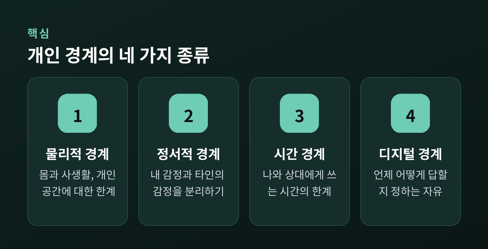
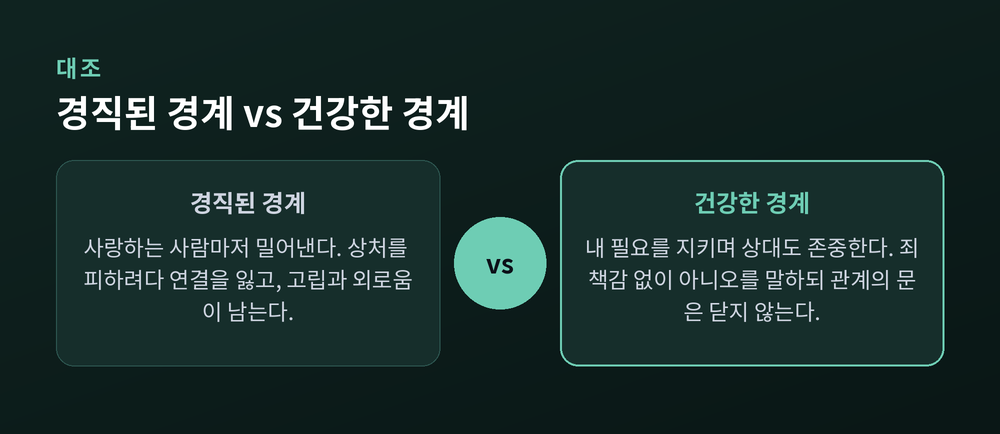
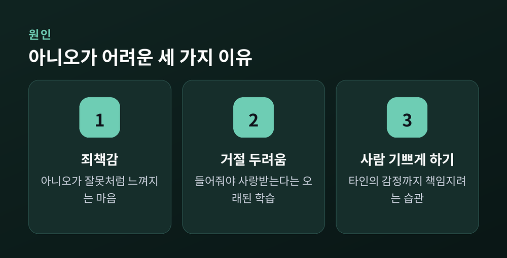
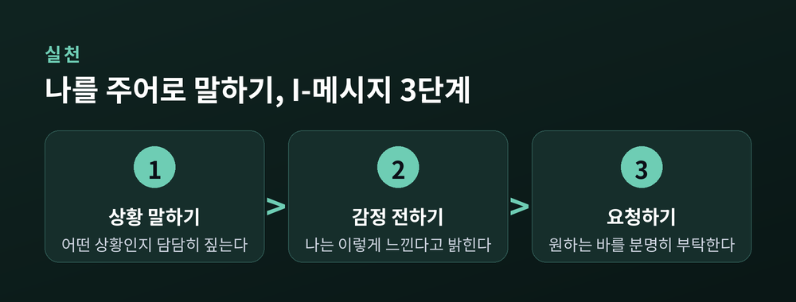
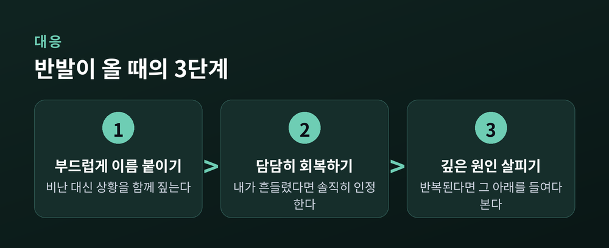

건강한 경계 설정의 심리학
— 관계에서 '아니오'를 말해도 괜찮은 이유
이번 글에서는 건강한 경계 설정이 무엇인지, 그리고 관계에서 '아니오'를 말하는 일이 왜 이기적이지 않은지를 심리학의 관점에서 정리해 보겠습니다. 거절이 어렵고, 부탁을 들어준 뒤에 마음이 무거워지는 분들을 위해 준비했습니다. 결론부터 말씀드리면, 경계는 관계를 끊는 벽이 아니라 관계를 오래 지키는 울타리입니다.

경계란 무엇인가
개인 경계는 나와 타인을 구분하는 보이지 않는 선입니다. 내가 어디까지 편안한지, 무엇을 받아들일 수 있는지를 알려주는 기준이기도 합니다.
심리학에서는 경계를 크게 네 가지로 나눕니다. 몸과 사생활에 관한 물리적 경계. 이를테면 갑작스러운 신체 접촉이 불편하다고 느끼는 감각입니다. 내 감정과 타인의 감정을 섞지 않는 정서적 경계. 상대의 기분을 내가 다 책임지지 않는 태도입니다. 시간을 어떻게 쓸지 정하는 시간 경계. 나와 상대, 그리고 나 자신에게 얼마를 내어줄지 정하는 일입니다. 메신저와 SNS에서 언제 어떻게 답할지 정하는 디지털 경계. 밤늦은 메시지에 곧장 답하지 않아도 되는 자유입니다.
이 밖에도 생각과 가치관에 관한 정신적 경계, 소유물에 관한 물질적 경계가 함께 논의됩니다. 그러나 일상에서 가장 자주 흔들리는 것은 앞의 네 가지입니다.
결국 모든 경계는 하나의 질문으로 이어집니다. "나는 어디까지 괜찮은가."

벽도 아니고, 없는 것도 아니다
경계는 없어도 문제고, 너무 단단해도 문제입니다.
느슨한 경계를 가진 사람은 '아니오'라고 말하기를 어려워합니다. 남의 문제를 자기 문제처럼 떠안고, 필요 이상으로 자신을 내어줍니다. 그 끝에는 원망과 소진이 기다립니다.
반대로 경직된 경계는 사랑하는 사람마저 밀어냅니다. 상처받지 않으려다 연결마저 잃습니다. 그 끝에는 고립과 외로움이 남습니다.
건강한 경계는 그 사이 어딘가에 있습니다. 내 필요를 지키면서, 상대의 필요도 존중하는 자리입니다. 죄책감 없이 '아니오'라고 말하되, 관계의 문은 닫지 않습니다.
예전에는 잘 참는 사람이 좋은 사람이라 여겼습니다. 지금은 잘 지키는 사람이 오래 함께할 수 있는 사람이라고 생각합니다.

왜 '아니오'는 이토록 어려운가
거절이 어려운 데에는 이유가 있습니다.
첫째, 죄책감입니다. 죄책감은 내 행동과 '내가 바라는 나' 사이의 틈에서 생깁니다. '아니오'가 잘못처럼 느껴지면, 그 틈이 우리를 붙잡습니다.
둘째, 거절에 대한 두려움입니다. 부탁을 들어줘야 사랑받는다는 믿음은 대개 오래된 학습입니다. '아니오는 무례하다'는 말을 어릴 적부터 들어온 셈입니다.
셋째, 사람을 기쁘게 하려는 습관입니다. 타인의 감정까지 책임지려는 마음은, 원치 않을 때도 "예"라고 답하게 만듭니다.
이 세 가지는 성격의 결함이 아닙니다. 살아오며 익힌 반응일 뿐입니다. 어린 시절 사랑받기 위해 나를 접어야 했던 경험이, 지금의 습관으로 남아 있는 경우도 많습니다. 익힌 것이라면, 다시 배울 수도 있습니다.

'아니오'는 이기적인 것이 아니다
많은 분이 경계를 세우는 자신을 이기적이라 느낍니다. 그러나 심리학은 그 반대를 말합니다.
경계를 세우는 일은 나약함이나 결함의 표시가 아닙니다. 오히려 용기이자 자기 존중이며, 자기 자비의 신호입니다.
'아니오'는 압도감과 번아웃을 줄입니다. 자기 존중을 단단하게 하고, 관계를 더 균형 있게 만듭니다.
경계가 흐려질수록 소진은 깊어집니다. 2020년 네덜란드에서 이뤄진 한 연구는, 일과 사생활의 경계가 무너질수록 정서적 소진이 커지고 행복이 줄어든다는 점을 보여주었습니다. 선이 사라지면 쉼도 사라지는 셈입니다.
내 시간에 선을 긋지 못하는 사람은, 정작 타인에게 내어줄 여력마저 잃습니다. 자기 자비 없이는 타인을 향한 자비도 오래가지 못합니다. 그러니 '아니오'는 나를 지키는 동시에, 관계를 지키는 말이기도 합니다.
경계를 세우는 법 — 나를 주어로 말하기
경계는 태도가 아니라 기술입니다. 그래서 연습으로 나아집니다.
가장 널리 쓰이는 방법은 '나' 전달법(I-메시지)입니다. "너는 왜 항상"으로 시작하면 상대는 방어부터 합니다. "나는"으로 시작하면 내 필요가 조용히 전해집니다.
공식은 단순합니다. 나는 어떤 상황에서 어떤 감정을 느낀다. 그래서 이런 것을 부탁한다.
예를 들어 이렇게 바꿀 수 있습니다. "왜 매번 늦게 연락해요"라는 말 대신, "밤늦게 연락이 오면 저는 마음이 조급해집니다. 급한 일이 아니라면 낮에 이야기 나눠요." 같은 내용이지만, 상대를 몰아세우지 않으면서 내 한계를 분명히 전합니다.
여기에 세 가지를 더하면 좋겠습니다. 답하기 전에 잠깐 멈추기. 과하게 해명하지 않기. 작은 거절부터 연습하기.
차분하지만 단호한 태도가 핵심입니다. "그건 어렵겠습니다"를 침착하게 반복하는 것만으로도, 공격 없이 뜻이 전해집니다.

상대가 반발할 때
경계를 세우면 모두가 반길 것 같지만, 늘 그렇지는 않습니다.
익숙한 관계일수록 처음엔 낯설어합니다. 오래 참아주던 사람이 선을 그으면, 상대는 변화 자체를 불편해하기도 합니다. 그 불편함이 곧 내 잘못이라는 뜻은 아닙니다. 그럴 때 필요한 것은 폭발도, 포기도 아닙니다. 잠시 멈추고, 이것이 한 번의 어긋남인지 반복되는 패턴인지 살피는 여유입니다.
비난 대신 부드럽게 이름 붙여 봅니다. "우리가 또 그 자리로 돌아왔네, 다시 맞춰볼까요."
내가 경계를 흐트러뜨렸다면 담담히 회복합니다. "맞아요, 제가 휩쓸렸네요. 지금 다시 집중할게요."
경계가 자꾸 무너진다면, 그 아래 더 깊은 무언가가 있다는 신호일 수 있습니다. 스트레스일 수도, 오래된 원망일 수도 있습니다. 그럴 때는 선을 다시 긋기보다, 그 아래를 함께 들여다보는 편이 낫습니다.

정리하면 이렇습니다.
경계는 관계를 끊는 벽이 아닙니다. 서로가 오래 편안할 수 있도록 세우는, 조절 가능한 울타리입니다. '아니오'는 그 울타리를 세우는 가장 짧은 문장입니다.
경계를 세우는 일이 처음에는 죄책감을 부를 수 있습니다. 그러나 연습이 쌓이면 죄책감은 옅어지고, 남는 것은 내가 주인인 삶입니다.
경계를 세워도 괜찮으냐고 물으신다면, 저는 이렇게 답하겠습니다. 괜찮습니다. 그리고 그것이 나와 관계를 함께 살리는 길입니다.